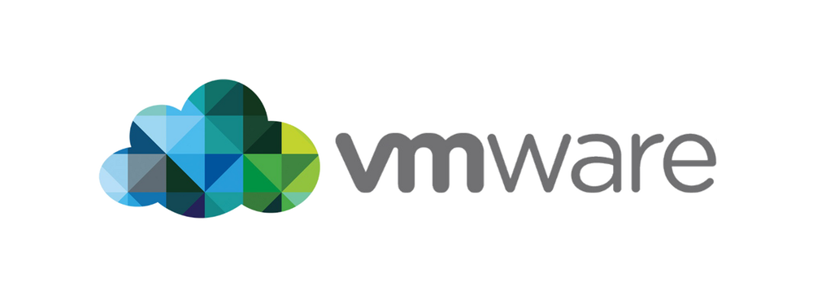

Despite many applications not being designed to run on Linux there are several ways to make Windows, OS X, or non-linux applications run properly on Linux systems. Through either using emulators like Wine, or through Virtual Machines, one is able to run non-Linux programs can be run just as efficiently as if they were run on their native operating systems.
The Wine Emulator is an open source project designed to allow Linux users to make any non Linux ported Windows application, program, or software, runnable on Linux machines. First released in 1993, it has allowed many non Linux programs to be used on nearly all Linux distributions. As of 2018, it has been optimised to allow use for of Windows applications from Microsoft Word, to even allowing Windows only video games to run directly on Linux machines.
VMware is a proprietary virtual machine software that allows users to use complete virtual machines of non Linux systems on their own system. VMware allows users to operate a full Windows, OS X, Linux, or any other OS system directly without actually installing a new operating system onto the machine.
